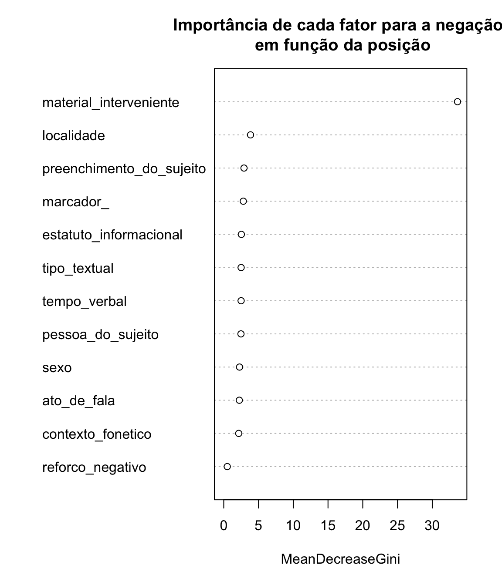
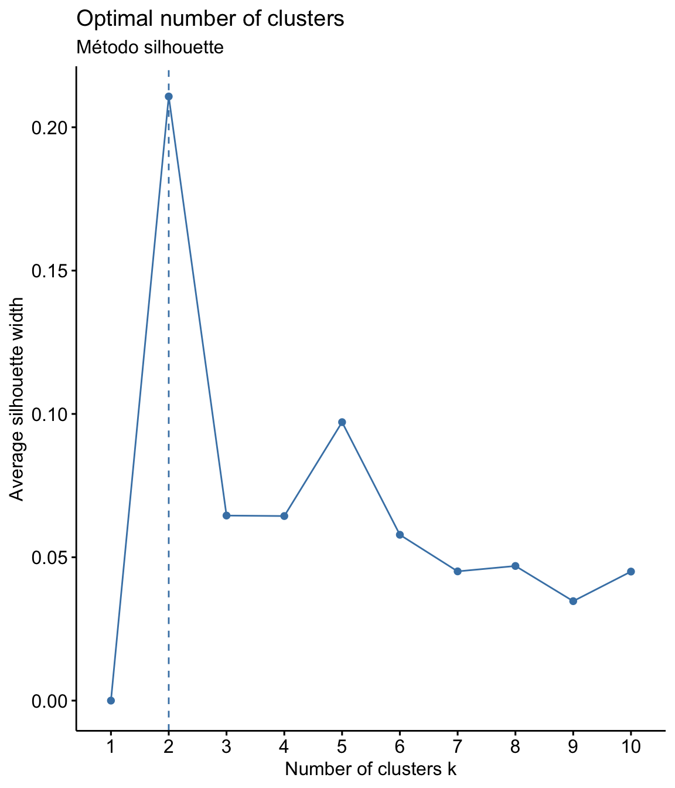
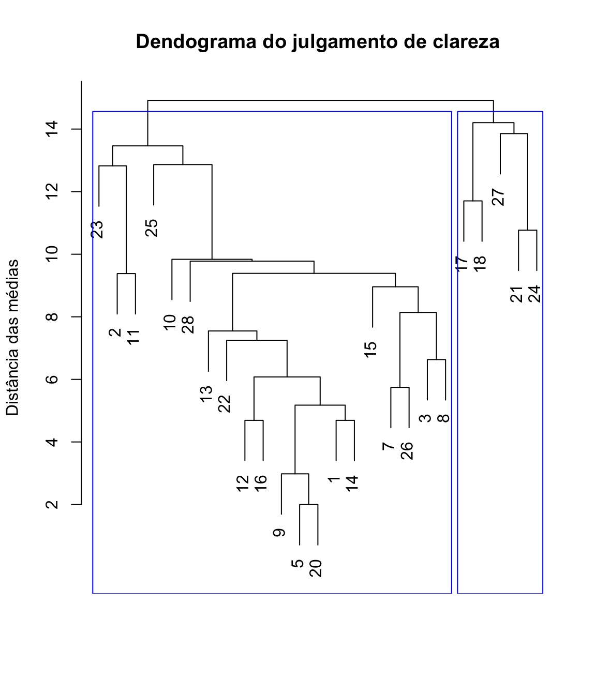

Redução de variáveis e de dados
Crie um novo projeto no RStudio e coloque na pasta os arquivos
negacao.csveself.csv. Crie umscriptdo Rstudio para registrar a sua análise. Com esse procedimento, não será necessário ficar mudando de diretório. E você pode voltar os passos caso tenha dificuldade com um comando. Este símbolo#significa que oscriptnão irá ler o que está na sequência; utilize para inserir comentários sobre sua análise.
Redução de dados significa sumarizar conjuntos de dados que têm muitas variáveis para um conjunto menor de variáveis selecionadas no conjunto original, por critérios estatísticos. Neste processo, é preciso garantir que a redução do tamanho para uma representação mais compacta não implique em supersimplificação, com a perda de informação relevante.
Depois de realizar os procedimentos de redução de dados, a interpretação depende de conhecimento teórico e das hipóteses assumidas. As técnicas apenas ajudam a decidir. O que impera são os conhecimentos do pesquisador. No conjunto de dados reduzido, podemos observar com mais clareza tendências, padrões e dados fora do esperado (outliers).
Quanto mais variáveis incluídas em um modelo de análise, mais complexa e custosa se torna a sua explicação. Por isso, é preciso tomar decisões para reduzir o número de variáveis incluídas. Vamos conhecer algumas técnicas; cada uma delas têm vantagens e desvantagens, além de restrições quanto aos tipos de variável. Antes de escolher qual a técnica, precisamos realizar a checagem do tipo da variável dependente. Seguindo princípios de Ciência Aberta, vamos trabalhar com conjuntos de dados reais, provenientes de outros estudos e compartilhados. Carregue o arquivo negacao (disponível em < >):
negacao <- read.table("negacao.csv", header = T, sep = ";")Observe a estrutura do banco de dados importado, com o comando str:
str(negacao)
#> 'data.frame': 376 obs. of 15 variables:
#> $ informante : chr "ros_fem_01" "ros_fem_01" "ros_fem_01" "ros_fem_01" ...
#> $ contexto_fonetico : chr "não" "não" "não" "não" ...
#> $ negacao : chr "Neg-V" "Neg-V" "Neg-V" "Neg-V" ...
#> $ tipo_de_verbo : chr "evento" "cognitivos" "existência" "existência" ...
#> $ pessoa_do_sujeito : chr "não falante" "falante" "falante" "falante" ...
#> $ tempo_verbal : chr "passado" "não passado" "não passado" "passado" ...
#> $ marcador_ : chr "ausente" "ausente" "ausente" "presente" ...
#> $ reforco_negativo : chr "sem reforço negativo" "sem reforço negativo" "sem reforço negativo" "sem reforço negativo" ...
#> $ preenchimento_do_sujeito: chr "não preenchido" "não preenchido" "não preenchido" "não preenchido" ...
#> $ estatuto_informacional : chr "informação dada" "informação nova" "informação dada" "informação dada" ...
#> $ ato_de_fala : chr "declarativo" "não declarativo" "não declarativo" "declarativo" ...
#> $ material_interveniente : chr "ausência de material interveniente" "ausência de material interveniente" "ausência de material interveniente" "ausência de material interveniente" ...
#> $ tipo_textual : chr "narrativo" "opinativo" "opinativo" "narrativo" ...
#> $ sexo : chr "feminino" "feminino" "feminino" "feminino" ...
#> $ localidade : chr "capital" "capital" "capital" "capital" ...Se na sua versão os dados não forem importados como factor, faça a conversão:
library(dplyr)
#>
#> Attaching package: 'dplyr'
#> The following objects are masked from 'package:stats':
#>
#> filter, lag
#> The following objects are masked from 'package:base':
#>
#> intersect, setdiff, setequal, union
negacao <- negacao %>% mutate_if(is.character, as.factor)Vamos começar com os procedimentos para um conjunto de dados de variável categórica.
Procedimentos para a redução dos dados:
- Decidir qual é a variável dependente
- Testar a significância em análise univariada
- Realizar a análise de redução
- Decidir pela inserção ou exclusão de variáveis dependentes
- Realizar nova análise
- Repetir passos anteriores até ter um modelo com um número de variáveis adequado
Classificação condicional
A técnica de árvores de inferências condicionais é um modelo de árvores de decisões em que as observações de ocorrências são agrupadas modo a ter o mínimo de variação dentro de um grupo e o máximo de variação entre os grupos.
As observações das ocorrências são agrupadas por partição binária recursiva, de modo a estabelecer uma hierarquia entre variáveis preditoras, e o grau de composicionalidade entre elas.
A árvore de inferências condicionais é baseada em cálculos de regressão, em que as partições representam o mais baixo p-valor que é obtido entre todos os níveis de todas as variáveis preditoras.
Como em uma árvore de verdade, uma árvore de inferências condicionais é um tipo de gráfico constituído por nódulos (node), que correspondem às folhas da árvore, e um conjunto de decisões de partição para cada nódulo, que corresponde ao tronco da árvore.
O objetivo de construir um modelo de árvore de classificação condicional é predizer o comportamento das respostas em observações futuras.
A aplicação de um modelo de árvore de classificação condicional permite identificar vieses de seleção de variáveis, além de servir a variáveis contínuas, ordinais e nominais (binárias ou eneárias). São modelos simples de entender e de interpretar e que permitem identificar regularidades em conjuntos de dados em que há muitos níveis em cada variável, possibilitando visualizar sobreposições ou categorizações que não agregam significância ao modelo.
Esta é uma abordagem de exploração de dados, análise estatística exploratória, baseada em testes de significância, e que pode ser especialmente útil para auxiliar na descrição de usos linguísticos diversos e variáveis quanto à regularidade a emergência da diversidade.
Vamos aprender a realizar uma análise de árvore de classificação condicional, a partir do conjunto de dados que utilizamos em Modelo de árvore de inferência condicional para explicar usos linguísticos variáveis (Freitag & Pinheiro 2020).
O problema em questão diz respeito à negação sentencial no portuguê brasileiro, cuja realização é variável, com padrões morfossintáticos e morfornêmicos diferentes. Do ponto de vista morfossintático, há três arranjos:
negação pré-verbal (neg-V): “minha mãe não morava tão perto da casa de minha irmã”
negação dupla (neg-V-neg): “ agora calma, eu não sou não”
negação pós-verbal (V-neg): “foi perto de onde eu moro não”
E, do ponto de vista morfofonêmico, em função das mudanças decorrentes enfraquecimento do elemento negativo, ocorre redução fonética, e a negação pode ter duas realizações:
Canônica (não): “eu não tenho problema com ninguém”
Reduzida (num): “num é um sotaque que gosto, mas a gente convive, né?”
Saber como esses arranjos se configuram nos dados é importante para definir o tipo de análise a ser realizada. Carregue os pacotes:
library(rpart)
library(rpart.plot)
library(party)
#> Loading required package: grid
#> Loading required package: mvtnorm
#> Loading required package: modeltools
#> Loading required package: stats4
#> Loading required package: strucchange
#> Loading required package: zoo
#>
#> Attaching package: 'zoo'
#> The following objects are masked from 'package:base':
#>
#> as.Date, as.Date.numeric
#> Loading required package: sandwich
library(randomForest)
#> randomForest 4.6-14
#> Type rfNews() to see new features/changes/bug fixes.
#>
#> Attaching package: 'randomForest'
#> The following object is masked from 'package:dplyr':
#>
#> combineÁrvore de partição
Vamos observar como o conjunto de dados se comporta quando a variável dependente é a realização fonética da negação com a função part. Uma técnica que pode ser empregada é a repartição, em que os dados são divididos de acordo com a maior frequência absoluta da variável dependente em fumnção de cada variável. Utilizamos o pacote rpart, e informamos o nome da variável dependente contexto_fonetico seguida do operador ~ e das demais variáveis a serem incluídas no modelo, adicionadas por +. Ao final, indicamos a fonte dos dados em data.
class_fonetica <- rpart(contexto_fonetico ~ negacao + sexo + material_interveniente + reforco_negativo + marcador_ + tempo_verbal + pessoa_do_sujeito + localidade + preenchimento_do_sujeito + estatuto_informacional + ato_de_fala + tipo_textual, data = negacao)Para visualizar o resultado, utilize o comando rpart.plot, as cores podem ser mudadas em box.col, e o título em main:
rpart.plot(class_fonetica, type=4, extra=2, faclen=0, under=TRUE, cex=1, box.col=c("pink", "lightblue")[class_fonetica$frame$yval], main = "Classificação dos dados em função da realização fonética") ## cores e título podem ser modificadosObserve a figura. A maior frequência de realização fonética na negação é de não, e a variável onde essa frequência fica dividida de forma mais polarizada é quanto ao sexo. Das 376 ocorrências de negação, 322 são de não. Para a variável sexo, o nível masculino computa 145 ocorrências de negação, das quais 140 são de não. Esta informação está no topo da árvore e no primeiro nódulo à esquerda. Para conferir estes valores, faça uma tabela com a variável dependente contexto_fonetico e a variável independente sexo, com margens:
addmargins(table(negacao$contexto_fonetico, negacao$sexo))
#>
#> feminino masculino Sum
#> não 182 140 322
#> num 49 5 54
#> Sum 231 145 376O mesmo procedimento vai sendo feito para cada uma das variáveis em ordem da frequência. São formados subconjuntos dos dados: os dados do nível feminino são partidos em função da pessoa do sujeito, o conjunto de dados do sexo feminino e da pessoa do sujeito não falante é partido em função do tempo da ação, o conjunto de dados do sexo feminino da pessoa do sujeito não falante e do tempo não passado é partido quanto ao ato de fala; o conjunto de dados do sexo feminino da pessoa do sujeito não falante do tempo não passado e declarativo é partido quanto à região de residência; e, por fim, o conjunto de dados do sexo feminino da pessoa do sujeito não falante do tempo não passado declarativo e do interior é composto por 32 ocorrências, das quais 18 são da forma num. Ufa! Cansativo! Mas pode indicar uma assimetria na distribuição e embasar decisões sobre a inclusão ou exclusão de variáveis, ou direção de amplicação da amostra.
Esta árvore foi construída com todos as variáveis do conjunto de dados; podemos excluir variáveis e observar o comportamento. Vamos construir um novo modelo excluindo os fatores sociais.
arvore_fonetica2 <- rpart(contexto_fonetico ~ negacao + material_interveniente + reforco_negativo + marcador_ + tempo_verbal + pessoa_do_sujeito + preenchimento_do_sujeito + estatuto_informacional + ato_de_fala + tipo_textual, data = negacao)
rpart.plot(arvore_fonetica2, type=4, extra=2, faclen=0, under=TRUE, cex=1, box.col=c("pink", "lightblue")[arvore_fonetica2$frame$yval], main = "Classificação dos dados em função \n da realização fonética sem fatores sociais")Veja que, retirando os fatores sociais, as frequências absolutas não permitem divisão, e sugerem que o enviesamento da análise é relacionado aos fatores sociais. Este dado pode ajudar no balanceamento de uma amostra, na busca de explicações e relação com outros fenômenos, ou mesmo na revisão de amostra, para verificar se não houve erro.
A partição é baseada apenas nas frequências absolutas e só funciona para variáveis dependentes categóricas binárias ou contínuas. Quando a variável dependente categórica tem mais de dois fatores, a partição pode até ser feita, mas o algoritmo fará um pareamento binário (fator 1 ~ fator 2 + fator 3).
Árvore de classificação
A árvore de classificação (a variável resposta pode ser dicotômica ou com múltiplos níveis), ou de regressão (se a variável dependente é contínua) implementada pela função ctree do pacote partykit não considera apenas as frequências absolutas, mas sim a singificância estatística de cada uma. Os procedimentos são:
- Realização de teste de independência entre uma variável explanatória e sua resposta (para se p-valor > 0.05);
- Seleção da variável com maior associação com a resposta;
- Escolha da melhor divisão binária para a variável selecionada;
- Repetição recursiva do passo 1 até os critérios de seleção serem esgotados.
A sintaxe é a mesma da partição; vejamos a árvore para o mesmo conjunto de dados da realização fonética de não:
arvore_fonetica <- ctree(contexto_fonetico ~ negacao + sexo + material_interveniente + reforco_negativo + marcador_ + tempo_verbal + pessoa_do_sujeito + localidade + preenchimento_do_sujeito + estatuto_informacional + ato_de_fala + tipo_textual, data = negacao)
plot(arvore_fonetica, main = "Árvore de classificação condicional para a realização fonética da negação",
tp_args = list(fill = c("blue", "yellow")), ip_args = list(fill = c("lightgreen")) ## cores podem ser modificadas
)O resultado é um diagrama arbóreo, apresentando cada partição do conjunto dos dados e sua distribuição, bem como o nível de significância. Comparando com a árvore de partição, podemos concluir que sexo e pessoa do discuso contribuem para a subcategorização dos dados neste conjunto.
Com estes resultados, o modelo explanatório formulado inicialmente pode ser revisado para cortar “galhos ladrões”: com a análise dos resultados, o modelo pode ser rearranjado com a eliminação das variáveis que não contribuem para uma generalização acurada.
Vamos agora realizar a testagem para a variável dependente posição:
arvore_posicao <- ctree(negacao ~ contexto_fonetico + sexo + material_interveniente + reforco_negativo + marcador_ + tempo_verbal + pessoa_do_sujeito + localidade + preenchimento_do_sujeito + estatuto_informacional + ato_de_fala + tipo_textual, data = negacao)
plot(arvore_posicao, main = "Árvore de classificação condicional para a posição da negação",
tp_args = list(fill = c("grey", "pink")), ip_args = list(fill = c("lightgreen"))
)Observe que a distribuição é condicionada pelo material interveniente e pela localidade.
arvore_posicao2 <- ctree(negacao ~ contexto_fonetico + material_interveniente + reforco_negativo + marcador_ + tempo_verbal + pessoa_do_sujeito + preenchimento_do_sujeito + estatuto_informacional + ato_de_fala + tipo_textual, data = negacao)
plot(arvore_posicao2, main = "Árvore de classificação condicional para a posição da negação \n sem fatores sociais",
tp_args = list(fill = c("grey", "pink")), ip_args = list(fill = c("lightgreen"))
)Como podemos perceber, uma mudança no arranjo das variáveis leva a outro arranjo de classificação. Esta é uma das limitações desta abordagem: para variáveis categóricas ou nominais com diferentes números de níveis, as decisões podem ser enviesadas em favor dos níveis que computarem o maior número de dados, e pequenas mudanças no conjunto de dados podem afetar drasticamente a estrutura da árvore.
Por sua característica agrupadora, é uma abordagem particularmente interessante em modelos em que há uma grande quantidade de níveis nas diferentes variáveis preditoras.
Florestas aleatórias
Florestas aleatórias (random forest) é uma técnica de agrupamento de dados que se vale de árvores de decisão simples: é um conjunto de árvores de decisões formadas aleatoriamente a partir de um subconjunto do conjunto de dados (1/3 do total, dados de treino, por reamostragem bootstrap), e que depois serão testadas no restante do conjunto de dados.
A sintaxe é a mesma dos demais modelos, implementadas pela função randomForest do pacote de mesmo nome.
floresta_contexto <- randomForest(contexto_fonetico ~ negacao + sexo + material_interveniente + reforco_negativo + marcador_ + tempo_verbal + pessoa_do_sujeito + localidade + preenchimento_do_sujeito + estatuto_informacional + ato_de_fala + tipo_textual, data = negacao)
print(floresta_contexto) # view results
#>
#> Call:
#> randomForest(formula = contexto_fonetico ~ negacao + sexo + material_interveniente + reforco_negativo + marcador_ + tempo_verbal + pessoa_do_sujeito + localidade + preenchimento_do_sujeito + estatuto_informacional + ato_de_fala + tipo_textual, data = negacao)
#> Type of random forest: classification
#> Number of trees: 500
#> No. of variables tried at each split: 3
#>
#> OOB estimate of error rate: 15.43%
#> Confusion matrix:
#> não num class.error
#> não 316 6 0.01863354
#> num 52 2 0.96296296Como podemos ver, o resultado da floresta aleatória apresenta uma matriz de confusão com os erros, e a taxa de erro na predição do comportamento do restante dos dados. No modelo em que consideramos a realização fonétiva da realização da negação, a taxa de erro é de 14.1%
O critério de seleção das variáveis é o valor do algoritmo de entropia ou o índice Gini, que pode ser visualizado em uma lista, ou em um gráfico, como podemos ver abaixo:
importance(floresta_contexto) # importance of each predictor
#> MeanDecreaseGini
#> negacao 3.4851469
#> sexo 6.1405648
#> material_interveniente 0.9956675
#> reforco_negativo 1.7155343
#> marcador_ 3.1261204
#> tempo_verbal 3.9397621
#> pessoa_do_sujeito 3.6430072
#> localidade 3.3845320
#> preenchimento_do_sujeito 2.5940276
#> estatuto_informacional 1.9017204
#> ato_de_fala 3.0284713
#> tipo_textual 2.6065880
varImpPlot(floresta_contexto,type=2, main = "Importância de cada fator para a negação \n em função da realização fonética")
Vamos agora fazer o mesmo com a variável dependente posição da negação:
floresta_posicao <- randomForest(negacao ~ contexto_fonetico + sexo + material_interveniente + reforco_negativo + marcador_ + tempo_verbal + pessoa_do_sujeito + localidade + preenchimento_do_sujeito + estatuto_informacional + ato_de_fala + tipo_textual, data = negacao)
varImpPlot(floresta_posicao,type=2, main = "Importância de cada fator para a negação \n em função da posição")
Uma das vantagens do método de Floresta Aleatória é que pode ser utilizado tanto para regressão (variáveis contínuas) quanto para classificação (variáveis categóricas) e é fácil visualizar a importância relativa das variáveis. Como os métodos de árvore, o resultado também é sensível ao tamanho da amostra, e mudanças mínimas nos dados podem incorrer em grandes mudanças na seleção de variáveis.
Clusters
Imagine uma situação em que um instrumento de avaliação com 40 itens foi avaliada por cada participante considerando 4 dimensões. Podemos calcular a média de cada um dos itens por dimensão, mas não teremos uma visão do todo. Não há uma variável dependente aqui, então não podemos usar modelos de regressão ou classificação. Precisamos reduzir o número de variáveis. E para isso podemos usar a análise de cluster, técnica para classificar elementos em grupos (cluster), de forma que elementos dentro de um mesmo cluster sejam muito parecidos, e os elementos em diferentes clusters sejam distintos entre si.
Na análise de cluster, a medida para a semelhança – ou diferença – entre os elementos de um cluster é a distância. Um método é cluster hierárquico por aglomeração, em que cada observação é inicialmente considerada como um agrupamento, e os agrupamentos mais semelhantes são aglomerados sucessivamente (processo bottom up).
Vamos trabalhar com um conjunto de dados que foi produzido a partir de um teste de julgamento de itens (40 itens em 4 dimensões), cuja descrição está apresentada no resumo expandido Consciência linguística, prescrição e o ensino de gramática (manuscrito não publicado). O instrumento consiste em 40 frases seguindo e não seguindo prescrições gramaticais, cada uma delas julgada em uma escala de 7 pontos, em que 1 é o menor nível e 7 é o maior nível, para os parâmetros: correção, aceitabilidade, clareza e formalidade. Não há um elemento gramatical específico, e sim o conjunto dos elementos.
Vamos importar o conjunto de dados self e carregar os pacotes necessários:
self <- read.csv("self.csv", sep = ";", header = TRUE)
library(dplyr)
library(factoextra)
#> Loading required package: ggplot2
#>
#> Attaching package: 'ggplot2'
#> The following object is masked from 'package:randomForest':
#>
#> margin
#> Welcome! Want to learn more? See two factoextra-related books at https://goo.gl/ve3WBaObserve a estrutura do banco de dados importado, com o comando str, :
str(self)
#> 'data.frame': 29 obs. of 161 variables:
#> $ participante : chr "carla" "adilson" "rafaela" "alexandra" ...
#> $ correcao1 : int 3 6 6 6 7 6 4 5 7 7 ...
#> $ aceitabilidade1 : int 7 7 6 5 7 7 4 6 7 7 ...
#> $ clareza1 : int 6 7 7 7 7 7 4 6 7 7 ...
#> $ formalidade1 : int 6 4 4 2 5 4 4 5 6 6 ...
#> $ correcao2 : int 6 7 5 6 7 3 4 4 7 6 ...
#> $ aceitabilidade2 : int 7 6 5 7 7 6 4 5 5 7 ...
#> $ clareza2 : int 6 3 6 7 7 6 4 6 7 7 ...
#> $ formalidade2 : int 5 2 3 2 7 2 3 4 3 7 ...
#> $ correcao3 : int 5 6 5 6 7 7 6 6 7 7 ...
#> $ aceitabilidade3 : int 6 7 5 7 7 7 6 5 7 7 ...
#> $ clareza3 : int 6 7 4 7 7 7 6 6 7 2 ...
#> $ formalidade3 : int 5 4 3 2 7 7 6 5 6 6 ...
#> $ correcao4 : int 6 7 7 5 6 2 5 7 5 7 ...
#> $ aceitabilidade4 : int 6 7 6 6 6 4 5 7 6 7 ...
#> $ clareza4 : int 6 5 7 5 7 3 5 7 7 7 ...
#> $ formalidade4 : int 6 4 6 2 6 2 3 7 6 6 ...
#> $ correcao5 : int 1 5 3 4 5 4 3 5 4 4 ...
#> $ aceitabilidade5 : int 6 6 4 5 5 5 4 5 4 7 ...
#> $ clareza5 : int 5 6 6 7 7 6 6 5 7 7 ...
#> $ formalidade5 : int 2 2 3 2 4 5 3 5 5 5 ...
#> $ correcao6 : int 1 4 2 3 3 2 3 4 4 2 ...
#> $ aceitabilidade6 : int 5 5 3 5 3 6 3 4 3 5 ...
#> $ clareza6 : int 6 7 6 7 7 6 6 6 7 7 ...
#> $ formalidade6 : int 1 3 2 1 2 1 3 3 4 3 ...
#> $ correcao7 : int 3 7 7 7 7 7 7 6 7 7 ...
#> $ aceitabilidade7 : int 5 7 7 7 7 7 7 5 6 7 ...
#> $ clareza7 : int 5 7 7 7 7 7 7 6 7 7 ...
#> $ formalidade7 : int 4 7 5 6 7 7 7 4 7 7 ...
#> $ correcao8 : int 3 7 6 6 7 4 6 6 7 7 ...
#> $ aceitabilidade8 : int 6 7 6 7 7 4 6 6 6 7 ...
#> $ clareza8 : int 6 7 7 7 7 4 6 6 7 5 ...
#> $ formalidade8 : int 4 5 5 5 7 2 6 5 5 7 ...
#> $ correcao9 : int 6 7 7 6 5 6 6 5 7 7 ...
#> $ aceitabilidade9 : int 6 7 7 7 5 7 6 5 6 7 ...
#> $ clareza9 : int 6 7 7 7 7 7 6 6 7 7 ...
#> $ formalidade9 : int 4 6 5 2 4 2 6 5 5 6 ...
#> $ correcao10 : int 3 5 7 5 6 6 5 6 7 7 ...
#> $ aceitabilidade10: int 6 6 7 6 6 7 6 6 6 7 ...
#> $ clareza10 : int 7 5 7 7 7 4 6 6 7 7 ...
#> $ formalidade10 : int 6 4 5 2 5 2 3 5 5 7 ...
#> $ correcao11 : int 5 6 6 5 6 4 5 7 7 6 ...
#> $ aceitabilidade11: int 7 7 7 5 6 4 5 7 7 7 ...
#> $ clareza11 : int 6 6 7 7 7 4 5 7 7 7 ...
#> $ formalidade11 : int 5 6 5 2 5 1 4 7 6 6 ...
#> $ correcao12 : int 3 1 7 4 7 5 4 5 6 4 ...
#> $ aceitabilidade12: int 7 2 7 NA 7 7 5 5 5 6 ...
#> $ clareza12 : int 7 1 7 6 7 7 5 6 7 7 ...
#> $ formalidade12 : int 1 1 6 3 6 4 4 5 6 5 ...
#> $ correcao13 : int 5 4 7 5 6 7 6 5 5 7 ...
#> $ aceitabilidade13: int 7 5 7 6 6 7 6 5 5 7 ...
#> $ clareza13 : int 7 6 7 7 7 7 6 6 7 7 ...
#> $ formalidade13 : int 2 5 5 4 6 7 6 6 4 7 ...
#> $ correcao14 : int 5 4 6 3 2 6 5 4 6 3 ...
#> $ aceitabilidade14: int 7 6 6 4 2 7 5 5 6 5 ...
#> $ clareza14 : int 7 7 6 6 7 7 5 6 7 7 ...
#> $ formalidade14 : int 2 4 4 2 2 5 5 4 4 5 ...
#> $ correcao15 : int 7 6 7 4 6 7 6 6 6 7 ...
#> $ aceitabilidade15: int 7 7 7 5 6 7 6 5 6 7 ...
#> $ clareza15 : int 7 7 7 6 7 7 6 7 7 7 ...
#> $ formalidade15 : int 5 4 4 2 6 6 4 5 4 7 ...
#> $ correcao16 : int 6 5 6 4 6 6 6 6 7 7 ...
#> $ aceitabilidade16: int 7 7 7 6 6 7 6 6 6 7 ...
#> $ clareza16 : int 7 7 7 6 7 7 6 5 7 7 ...
#> $ formalidade16 : int 7 5 5 3 6 4 5 5 5 6 ...
#> $ correcao17 : int 6 1 3 4 5 4 4 7 6 2 ...
#> $ aceitabilidade17: int 7 2 4 4 5 5 5 6 6 4 ...
#> $ clareza17 : int 7 2 4 6 7 5 5 5 7 7 ...
#> $ formalidade17 : int 5 1 2 2 4 2 3 6 6 4 ...
#> $ correcao18 : int 4 7 5 4 7 4 7 5 7 4 ...
#> $ aceitabilidade18: int 7 7 6 5 7 6 7 7 7 6 ...
#> $ clareza18 : int 7 7 7 6 7 6 7 6 7 7 ...
#> $ formalidade18 : int 2 7 7 6 7 5 7 6 7 6 ...
#> $ correcao19 : int 3 6 2 4 4 4 4 4 6 1 ...
#> $ aceitabilidade19: int 7 7 4 4 4 5 5 6 5 3 ...
#> $ clareza19 : int 7 7 5 6 7 5 5 7 7 7 ...
#> $ formalidade19 : int 1 6 3 3 3 1 5 3 4 1 ...
#> $ correcao20 : int 3 4 2 3 4 4 3 3 5 1 ...
#> $ aceitabilidade20: int 7 5 4 4 4 5 5 4 5 3 ...
#> $ clareza20 : int 7 5 5 6 7 5 5 6 7 7 ...
#> $ formalidade20 : int 1 2 3 2 3 2 3 3 3 1 ...
#> $ correcao21 : int 6 7 6 5 6 7 7 7 7 7 ...
#> $ aceitabilidade21: int 7 7 6 6 6 7 7 7 7 7 ...
#> $ clareza21 : int 7 7 7 6 7 7 7 7 7 7 ...
#> $ formalidade21 : int 7 5 5 2 5 6 7 7 7 7 ...
#> $ correcao22 : int 6 7 7 5 6 7 6 6 6 7 ...
#> $ aceitabilidade22: int 7 6 7 6 6 7 6 5 6 7 ...
#> $ clareza22 : int 7 7 7 6 6 7 6 6 7 7 ...
#> $ formalidade22 : int 7 5 5 2 6 7 6 5 6 7 ...
#> $ correcao23 : int 6 6 6 5 6 6 5 6 5 6 ...
#> $ aceitabilidade23: int 7 7 7 6 6 6 5 6 5 7 ...
#> $ clareza23 : int 7 7 7 6 7 6 5 7 7 7 ...
#> $ formalidade23 : int 3 6 4 3 5 6 5 5 3 5 ...
#> $ correcao24 : int 5 6 6 5 7 7 5 6 6 6 ...
#> $ aceitabilidade24: int 7 7 7 6 7 7 5 7 6 7 ...
#> $ clareza24 : int 7 7 7 6 7 7 5 6 7 7 ...
#> $ formalidade24 : int 6 5 4 3 7 5 5 4 5 6 ...
#> $ correcao25 : int 5 4 5 5 7 6 5 6 4 6 ...
#> $ aceitabilidade25: int 6 4 6 6 7 7 5 7 3 7 ...
#> [list output truncated]Observando as primeiras ocorrrências deste conjunto de dados, os resultados do primeiro item, a frase Por causa do estágio, Pedro vai estar pegando todas as disciplinas pela manhã nos próximos períodos, sugerem que há grande convergência para a clareza, mas menos para a formalidade. Podemos observar como se comportam os quatro parâmetros avaliados e depois decidir quais os melhores itens para uma análise mais refinada com o número de variáveis reduzido.
O primeiro passo é preparar o conjunto de dados. Para isso, precisamos eliminar as ausências de resposta (usamos a função na.omit, que ignora as ocorrências sem resposta) e excluir todos as variáveis que não são numéricas (no caso deste conjunto de dados, a variável participante):
self <- na.omit(self)
self <- self %>% select(-participante) Em seguida, precisamos definir o número de clusters a serem considerados na análise. Há vários métodos, vamos ver dois deles: elbow (cotovelo) e silhouette (silhueta)
No método elbow são rodados clusters de 1 a 10, e é calculada a soma dos quadrados das distâncias internas de cada um. O melhor número para a quantidade de clusters é quando a adição de um novo cluster não aumenta significativamente o valor (geralmente este valor fica no “cotovelo” do gráfico). No método silhouette os itens são medidos para ver o quanto se enquadram em um cluster. O coeficiente de Silhouette quando próximo de +1, indica que os pontos estão muito longe dos pontos do outro cluster, e quando próximo de 0, indica que os pontos então muito perto ou até interseccionando um outro cluster.
fviz_nbclust(self, kmeans, method = "wss") +
labs(subtitle = "Método elbow")fviz_nbclust(self, kmeans, method = "silhouette")+
labs(subtitle = "Método silhouette")
Agora que já sabemos quantos clusters, vamos calcular as distâcias e visualizar o dendograma de classificação hierárquica:
hclust <- hclust(dist(self), method = "complete")
plot(hclust, main = "Dendograma hierárquico de julgamento \n quanto à formalidade, aceitabilidade, clareza e correção")
rect.hclust(hclust,
k = 2,
border = "blue"
)A análise de clusters permite encontrar tendências e padrões nos julgamentos, agrupando observações parecidas entre muitas variáveis diferentes, o que possibilita, por exemplo, o redesenho do instrumento, reduzindo itens.
Podemos realizar um cluster para cada uma das dimensões de análise dos itens do instrumento.
clareza <- self %>%
select(starts_with("clareza"))
clust.clareza <- hclust(dist(clareza), method = "average")
plot(clust.clareza, xlab = "", sub="", ylab = "Distância das médias",
main = "Dendograma do julgamento de clareza")
rect.hclust(clust.clareza,
k = 2,
border = "blue"
)
Este resultado ajuda a decidir quais “galhos” podem ser “podados”. A vantagem no uso da análise de cluster é poder descrever melhor cada um dos grupos identificados e identificar correlações entre dados que não seriam visíveis em análises individuais de cada um dos itens.
Análise de componentes principais
A análise de componentes principais toma um conjunto de dados em uma matriz de ocorrências por variáveis, que podem estar correlacionadas, e sumariza esse conjunto em eixos não correlacionados (componentes principais) que são uma combinação linear das variáveis originais. Os componentes principais são combinações lineares das variáveis originais que respondem pela variação nos dados. O número máximo de componentes é sempre igual ao número de variáveis. Os autovetores são compostos de coeficientes que correspondem a cada variável e indicam o peso relativo de cada variável no componente.
library(FactoMineR)
pca.self <- PCA(self, graph=TRUE)
summary(pca.self)
#>
#> Call:
#> PCA(X = self, graph = TRUE)
#>
#>
#> Eigenvalues
#> Dim.1 Dim.2 Dim.3 Dim.4 Dim.5 Dim.6 Dim.7
#> Variance 42.180 19.321 12.610 10.898 9.672 7.278 6.932
#> % of var. 26.362 12.076 7.881 6.811 6.045 4.548 4.332
#> Cumulative % of var. 26.362 38.438 46.319 53.131 59.176 63.724 68.056
#> Dim.8 Dim.9 Dim.10 Dim.11 Dim.12 Dim.13 Dim.14
#> Variance 6.156 5.422 5.043 4.952 4.349 3.704 3.392
#> % of var. 3.848 3.389 3.152 3.095 2.718 2.315 2.120
#> Cumulative % of var. 71.904 75.293 78.445 81.540 84.258 86.573 88.693
#> Dim.15 Dim.16 Dim.17 Dim.18 Dim.19 Dim.20 Dim.21
#> Variance 3.161 2.778 2.211 2.202 1.957 1.546 1.325
#> % of var. 1.975 1.736 1.382 1.376 1.223 0.966 0.828
#> Cumulative % of var. 90.668 92.404 93.786 95.162 96.385 97.351 98.180
#> Dim.22 Dim.23 Dim.24
#> Variance 1.053 0.998 0.862
#> % of var. 0.658 0.624 0.538
#> Cumulative % of var. 98.838 99.462 100.000
#>
#> Individuals (the 10 first)
#> Dist Dim.1 ctr cos2 Dim.2 ctr cos2
#> 1 | 11.883 | 2.922 0.810 0.060 | 2.909 1.752 0.060 |
#> 2 | 11.338 | 1.083 0.111 0.009 | -0.899 0.167 0.006 |
#> 3 | 7.664 | 2.253 0.481 0.086 | -1.709 0.605 0.050 |
#> 5 | 9.221 | 5.144 2.509 0.311 | 0.432 0.039 0.002 |
#> 7 | 8.201 | -0.866 0.071 0.011 | 3.501 2.537 0.182 |
#> 8 | 8.758 | 0.604 0.035 0.005 | 3.148 2.052 0.129 |
#> 9 | 9.057 | 4.446 1.875 0.241 | 0.534 0.059 0.003 |
#> 10 | 11.008 | 7.280 5.026 0.437 | -1.327 0.364 0.015 |
#> 11 | 12.089 | -5.970 3.380 0.244 | -2.335 1.129 0.037 |
#> 12 | 9.934 | 7.939 5.977 0.639 | -0.906 0.170 0.008 |
#> Dim.3 ctr cos2
#> 1 -3.971 5.001 0.112 |
#> 2 0.224 0.016 0.000 |
#> 3 -1.008 0.322 0.017 |
#> 5 2.203 1.539 0.057 |
#> 7 -0.190 0.011 0.001 |
#> 8 -1.681 0.896 0.037 |
#> 9 -0.054 0.001 0.000 |
#> 10 2.077 1.369 0.036 |
#> 11 1.120 0.398 0.009 |
#> 12 -0.516 0.084 0.003 |
#>
#> Variables (the 10 first)
#> Dim.1 ctr cos2 Dim.2 ctr cos2 Dim.3 ctr
#> correcao1 | 0.363 0.312 0.131 | 0.283 0.413 0.080 | -0.125 0.124
#> aceitabilidade1 | 0.245 0.143 0.060 | 0.082 0.035 0.007 | -0.228 0.411
#> clareza1 | 0.073 0.013 0.005 | -0.298 0.459 0.089 | -0.049 0.019
#> formalidade1 | 0.121 0.035 0.015 | 0.712 2.621 0.506 | 0.030 0.007
#> correcao2 | 0.709 1.191 0.502 | -0.020 0.002 0.000 | -0.342 0.926
#> aceitabilidade2 | 0.636 0.958 0.404 | -0.071 0.026 0.005 | -0.435 1.503
#> clareza2 | 0.351 0.292 0.123 | -0.129 0.086 0.017 | 0.089 0.062
#> formalidade2 | 0.571 0.772 0.325 | 0.339 0.596 0.115 | 0.222 0.392
#> correcao3 | 0.357 0.303 0.128 | -0.587 1.783 0.344 | 0.243 0.469
#> aceitabilidade3 | 0.455 0.490 0.207 | -0.366 0.695 0.134 | 0.250 0.495
#> cos2
#> correcao1 0.016 |
#> aceitabilidade1 0.052 |
#> clareza1 0.002 |
#> formalidade1 0.001 |
#> correcao2 0.117 |
#> aceitabilidade2 0.189 |
#> clareza2 0.008 |
#> formalidade2 0.049 |
#> correcao3 0.059 |
#> aceitabilidade3 0.062 |Para interpretar cada componente principal, observamos a magnitude e a direção dos coeficientes das variáveis originais. Quanto maior o valor absoluto do coeficiente, mais importante será a variável correspondente ao calcular o componente. Observe o percentual com que cada dimensão contribui para explicar a variação. A dimensão 1 é responsável por 26.3% da variação no conjunto dos dados. A diemnsão 2 é responsável por 12.1% da variação.
Uma forma de visualizar estes resultados é por meio de um gráfico de cargal fatoria, que representa os coeficientes de cada variável para o primeiro componente em função dos coeficientes para o segundo componente.
fviz_pca_var(pca.self,
col.var = "contrib",
gradient.cols = c("#00AFBB", "#E7B800", "#FC4E07"),
repel = TRUE
)No gráfico de cargas fatoriais para identificar quais variáveis têm o maior efeito em cada componente. As cargas fatoriais podem variar de -1 a 1. As cargas fatoriais próximas de -1 ou 1 indicam que a variável influencia fortemente o componente. As cargas fatoriais próximas de 0 indicam que a variável tem uma influência fraca no componente.
No caso, vemos que a variável formalidade17 tem um padrão de comportamento distinto das demais, com carga fatorial negativa. É um caso de infinitivo flexionado duplo: A universidade é o espaço para podermos fazermos as transformações na sociedade em que vivemos
Análise fatorial
Análise fatorial é um outro procedimento, muito parecido com a análise de componentes principais. Ambas são utilizadas para redução de conjuntos de variáveis. A análise fatorial considera uma matriz de correlação ou de covariância, enquanto a análise de componentes principais considera o conjunto de dados original. A análise de componentes principais tem por objetivo explicar o máximo possível a variância total nas variáveis, enquanto a análise fatorial busca explicar as covariâncias ou correlações entre as variáveis. Por isso, a análise de componentes principais é usada para reduzir os dados a um número menor de componentes, e a análise fatorial ajuda a entender quais construtos são subjacentes aos dados.